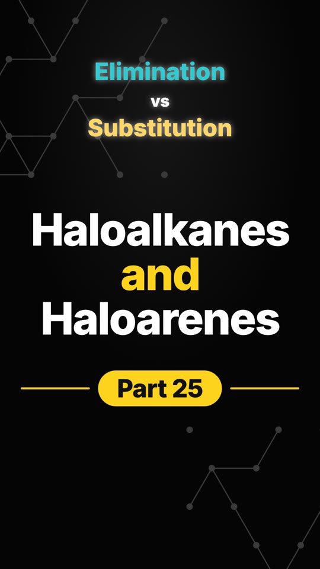
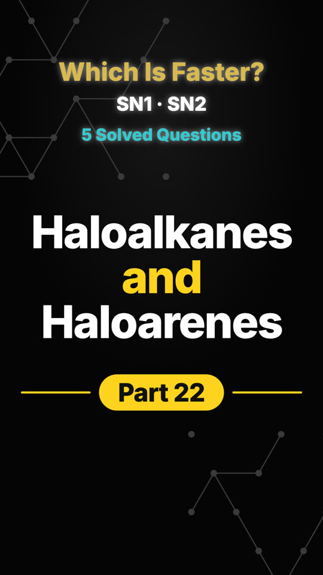

Choose your class
Every subject is laid out chapter by chapter. Each topic has a short Doodle video, notes you can download and a quick quiz.
Class 9Motion, matter, the cell and number systems: the foundations of school science and maths.ScienceMathematics21 videosClass 10Light, electricity, chemical reactions, life processes and the algebra and geometry of board year.ScienceMathematics9 videosClass 11Mechanics, thermodynamics, atomic structure, bonding, functions and the living world.PhysicsChemistryMathematicsBiology16 videosClass 12Electromagnetism, optics, modern physics, solutions and kinetics, calculus and genetics.PhysicsChemistryMathematicsBiology82 videosExtra / SupplementaryCurious questions beyond the syllabus: why the sky is blue, why we yawn, why 0.999… equals 1, and more.ScienceBiologyMathematics11 videos
Newest videos
 Wurtz Reaction: Join Two Alkyl GroupsAlkyl halides react with sodium in dry ether to give alkanes with double the number of carbon atoms. In this lesson: 2RX + 2Na in dry ether gives R-R + 2NaX, bromomethane to ethane, how it works in a simple ionic picture (Na gives electrons, R- attacks a second R-X from the back, beyond NCERT), why two different halides give a mixture of three alkanes, why methane cannot be made, and two solved questions.Haloalkanes and Haloarenes · Chemistry
Wurtz Reaction: Join Two Alkyl GroupsAlkyl halides react with sodium in dry ether to give alkanes with double the number of carbon atoms. In this lesson: 2RX + 2Na in dry ether gives R-R + 2NaX, bromomethane to ethane, how it works in a simple ionic picture (Na gives electrons, R- attacks a second R-X from the back, beyond NCERT), why two different halides give a mixture of three alkanes, why methane cannot be made, and two solved questions.Haloalkanes and Haloarenes · Chemistry Grignard Reagent: Why It Needs Dry EtherAlkyl halides react with magnesium in dry ether to give alkylmagnesium halides, RMgX: very useful, and destroyed by any trace of water. In this lesson: RX + Mg in dry ether gives RMgX (Victor Grignard, Nobel 1912), magnesium slipping between C and Br, the polar C-Mg bond with a carbanion-like carbon, the curved-arrow mechanism with water (RMgX + H2O → RH + Mg(OH)X), why moisture, alcohols and amines destroy it, and two solved questions.Haloalkanes and Haloarenes · Chemistry
Grignard Reagent: Why It Needs Dry EtherAlkyl halides react with magnesium in dry ether to give alkylmagnesium halides, RMgX: very useful, and destroyed by any trace of water. In this lesson: RX + Mg in dry ether gives RMgX (Victor Grignard, Nobel 1912), magnesium slipping between C and Br, the polar C-Mg bond with a carbanion-like carbon, the curved-arrow mechanism with water (RMgX + H2O → RH + Mg(OH)X), why moisture, alcohols and amines destroy it, and two solved questions.Haloalkanes and Haloarenes · Chemistry
Elimination vs Substitution: Alcohol or Alkene?An alkyl halide with a β-hydrogen can be attacked at carbon (substitution) or lose HX (elimination). The conditions decide which wins. In this lesson: OH- as a nucleophile or as a base, aqueous vs alcoholic KOH, 1° vs 3° halides, the size of the base (tert-butoxide), temperature, and two solved questions: bromoethane + aqueous KOH and 2-bromo-2-methylpropane + alcoholic KOH.Haloalkanes and Haloarenes · Chemistry E1 vs E2 Mechanism: One Jump or Stop-and-Go?Two ways an alkyl halide loses HX to give an alkene: in one step (E2) or in two steps through a carbocation (E1). Beyond NCERT; important for JEE. In this lesson: E2 with a strong base, rate = k[RX][base], one step with H and X anti; E1 with a weak base in a protic solvent, rate = k[RX], two steps through a carbocation; energy profiles, comparison, rearrangement, Saytzeff, and two solved questions on tert-butyl bromide.Haloalkanes and Haloarenes · Chemistry
E1 vs E2 Mechanism: One Jump or Stop-and-Go?Two ways an alkyl halide loses HX to give an alkene: in one step (E2) or in two steps through a carbocation (E1). Beyond NCERT; important for JEE. In this lesson: E2 with a strong base, rate = k[RX][base], one step with H and X anti; E1 with a weak base in a protic solvent, rate = k[RX], two steps through a carbocation; energy profiles, comparison, rearrangement, Saytzeff, and two solved questions on tert-butyl bromide.Haloalkanes and Haloarenes · Chemistry β-Elimination and Saytzeff Rule: Which Alkene Wins?Heating an alkyl halide with alcoholic KOH removes the halogen and a hydrogen from the next carbon: an alkene forms. In this lesson: alcoholic KOH and heat, dehydrohalogenation of bromoethane, α- and β-carbons, the bond changes with curved arrows (base takes the β-H, C=C forms, Br- leaves), 2-bromopentane giving pent-2-ene (81 %) and pent-1-ene (19 %), the Saytzeff rule, and two solved questions.Haloalkanes and Haloarenes · Chemistry
β-Elimination and Saytzeff Rule: Which Alkene Wins?Heating an alkyl halide with alcoholic KOH removes the halogen and a hydrogen from the next carbon: an alkene forms. In this lesson: alcoholic KOH and heat, dehydrohalogenation of bromoethane, α- and β-carbons, the bond changes with curved arrows (base takes the β-H, C=C forms, Br- leaves), 2-bromopentane giving pent-2-ene (81 %) and pent-1-ene (19 %), the Saytzeff rule, and two solved questions.Haloalkanes and Haloarenes · Chemistry
Which Reacts Faster by SN1 or SN2? 5 Solved QuestionsA question set: two rules, five pairs, each solved with a reason. In this lesson: the two rules (SN2: least crowding; SN1: most stable carbocation) and the leaving group order I ＞ Br ＞ Cl, then five solved pairs: 1- vs 2-bromobutane, 1-bromo-3-methylbutane vs 1-bromo-2-methylbutane, 2-bromopropane vs 2-bromo-2-methylpropane, benzyl chloride vs 1-chloro-1-phenylethane, ethyl chloride vs ethyl iodide.Haloalkanes and Haloarenes · Chemistry